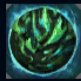
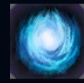
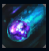
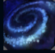
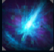

Veigar
| Veigar The Tiny Master of Evil | |
|---|---|
| Release date | 24.07.2009 |
| Class | Burst |
| Positions | Middle |
| Resource | Mana |
| Range type | Ranged |
| Adaptive type | Magic |
| Base statistics | |||
| Health | 505 – 2103 | Mana | 490 – 932 |
| Health regen. | 6.5 – 16.7 |
Mana regen. | 8 – 21.6 |
| Armor | 23 – 86.75 | Attack damage | 52 – 97.9 |
| Magic resist. | 32 – 40.5 | Crit. damage | 175% |
| Move. speed | 340 | Attack range | 550 |
Veigar, un maestru pasionat al magiei negre, a asimilat puteri de care puțini muritori ar îndrăzni să se apropie. Fiind un locuitor deschis la minte din Orașul Bandle, și-a dorit cu ardoare să depășească limitele magiei yordle, așa că a studiat texte oculte ce stătuseră ascunse timp de mii de ani. În timp, a devenit o creatură încăpățânată și extrem de fascinată de misterele universului. Veigar este subestimat deseori; dar, chiar dacă se consideră a fi un yordle cu adevărat rău, e înzestrat cu o moralitate care-i face pe unii să-i pună la îndoială adevăratul scop. |  |
FENOMENAL DE MALEFIC Veigar este răul suprem din Runeterra, cel mai mare dezastru care ar fi putut exista – și e din ce în ce mai mare! Când lovește un campion inamic cu o vrajă sau reușește o doborâre, Veigar primește permanent puterea abilităților suplimentară. |
||
|---|---|---|---|---|
 |
UNDĂ MALEFICĂ Veigar dezlănțuie energie malefică asupra țintei alese, provocându-le daune magice primilor doi inamici loviți. Dacă ucide o unitate folosind această abilitate, Veigar câștigă în mod permanent o cantitate de putere a abilităților. |
|||
 |
MATERIE ÎNTUNECATĂ Veigar invocă materie întunecată care cade din cer în locația-țintă, provocând daune magice la aterizare. Cumulurile de ''Rău fenomenal'' reduc timpul de reactivare al ''Materiei întunecate''. |
|||
|  |
ORIZONTUL EVENIMENTELOR Veigar deformează limitele spațiului, creând o cușcă ce amețește inamicii care încearcă să treacă prin zidurile sale. |
|||
 |
EXPLOZIE PRIMORDIALĂ Lovește campionul țintă și îi provoacă o cantitate mare de daune magice, care crește în funcție de viața sa lipsă. |